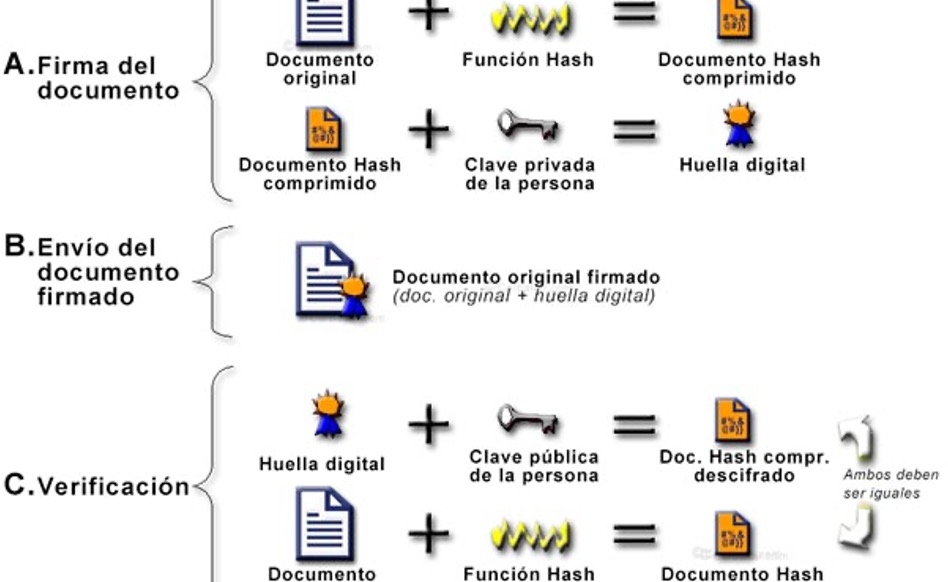
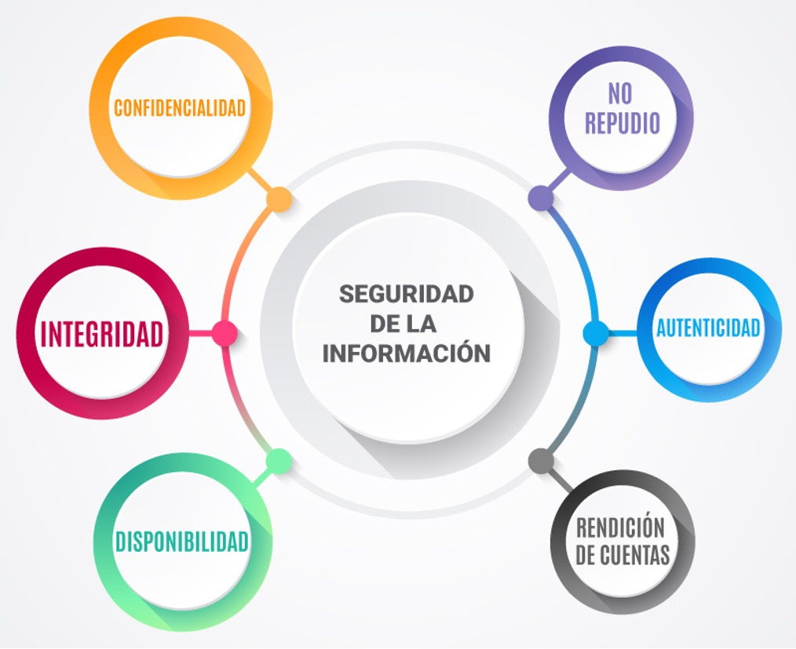
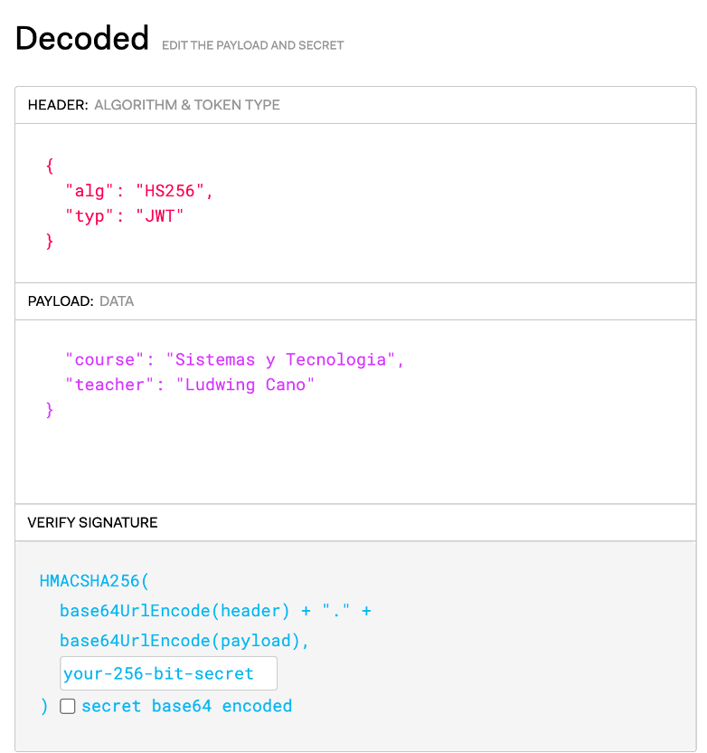
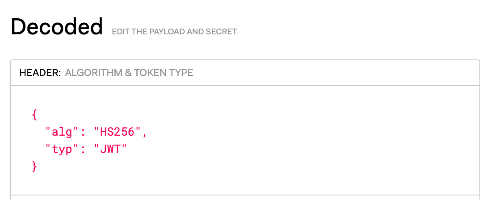
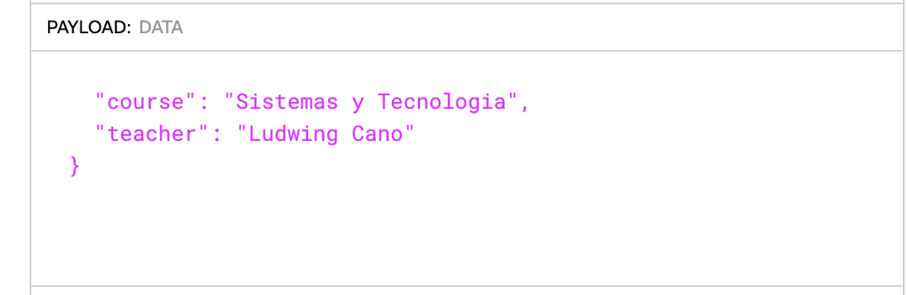
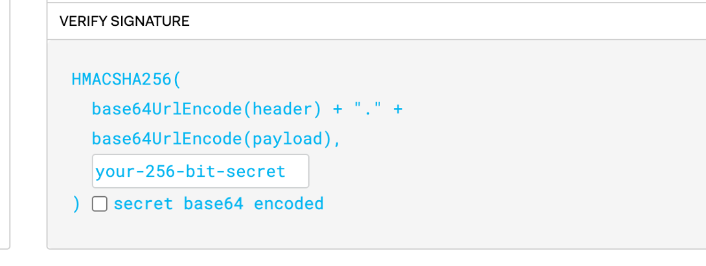

Firmas Digitales
¿Qué es una Firma Digital?
Una firma digital es un mecanismo criptográfico que proporciona autenticidad, integridad y no repudio.
Basada en criptografía de clave pública.
Utilizada para verificar la identidad y asegurar que el contenido no ha sido alterado.
Las 3 Garantías de una Firma Digital
- Autenticidad: Solo quien tiene la clave privada pudo haber generado esa firma
- Integridad: Cualquier modificación al documento invalida la firma — detectable inmediatamente
- No repudio: El firmante no puede negar haber firmado — base legal de contratos electrónicos
A diferencia de las firmas manuscritas, las firmas digitales son matemáticamente verificables por cualquier persona
¿Cómo Funciona?
Generación de la Firma
- Calcular el hash del mensaje: h = H(mensaje)
- Cifrar el hash con la clave privada del firmante: σ = E(h, k_priv)
- Transmitir: mensaje + σ (la firma)
Verificación de la Firma
- Descifrar la firma con la clave pública: h' = D(σ, k_pub)
- Calcular el hash del mensaje recibido: h = H(mensaje)
- Si h == h' → firma válida

El Rol del Hash en la Firma
Las funciones hash son esenciales en el proceso de firma:
- Permiten firmar documentos de cualquier tamaño con una operación de tamaño fijo
- RSA solo puede firmar datos del tamaño de la clave (~256 bytes para RSA-2048)
- Hash SHA-256 de 32 bytes → RSA firma esos 32 bytes → válida para un documento de cualquier tamaño

- Generar un nuevo hash a partir del documento recibido
- Descifrar el hash que el propio documento contiene almacenado.
Hash y Colisiones
- Si dos mensajes producen el mismo hash (colisión), un atacante podría sustituir el documento firmado por otro malicioso
- MD5: colisiones demostradas en 1996; no usar en firmas
- SHA-1: SHAttered attack (Google, 2017) — colisión real producida. No usar en firmas nuevas
- SHA-256 / SHA-3 / BLAKE3: ninguna colisión conocida. Usar estos
Propiedades Adicionales
- Imposibilidad de falsificación: computacionalmente inviable para un tercero falsificar una firma válida sin conocer la clave privada del firmante
- Verificabilidad: cualquier destinatario puede verificar la firma sin compartir ninguna clave secreta
- Independencia del contenido: la firma se calcula sobre el contenido completo pero no revela ninguna información sobre el mismo

Algoritmos de Firma Digital
| Algoritmo | Base | Seguridad | Estado |
|---|---|---|---|
| RSA-PSS | Factorización | 3072 bits = 128 bits seg. | Aceptable |
| ECDSA (P-256) | ECDLP | 256 bits = 128 bits seg. | Recomendado |
| Ed25519 (EdDSA) | ECDLP (Curve25519) | 256 bits = 128 bits seg. | Más recomendado |
| ML-DSA (Dilithium) | Retículos modulares | Post-cuántico | NIST FIPS 204 (2024) |
| RSA-PKCS#1 v1.5 | Factorización | — | Solo compatibilidad |
| DSA clásico | Log. discreto | — | Obsoleto (NIST) |
¿Por qué Ed25519 es preferido?
- Diseñado para evitar vulnerabilidades comunes de implementación
- Nonce determinístico: k se deriva del mensaje + clave privada. No puede reutilizarse accidentalmente (a diferencia de ECDSA)
- Operaciones de tiempo constante por diseño — resistente a timing attacks
- Más rápido que ECDSA y RSA en verificación
- Adoptado por SSH, TLS 1.3, Signal, Tor, Monero, Cardano
Infraestructura de Clave Pública (PKI)
¿Qué es la PKI?
La PKI (Public Key Infrastructure) es el conjunto de roles, políticas, hardware, software y procedimientos para gestionar certificados digitales y claves públicas.
- Problema: ¿Cómo sé que la clave pública de "banco.com" realmente pertenece al banco y no a un atacante?
- Solución: Una Autoridad de Certificación (CA) firma digitalmente ese vínculo
Certificados X.509
Un certificado X.509 es un documento digital que vincula una clave pública con una identidad (dominio, persona u organización).
- Contiene: clave pública, nombre del sujeto, emisor (CA), validez
- Está firmado digitalmente por la CA emisora
- Usado en HTTPS, S/MIME, firma de código, VPN
# Ver certificado de un sitio web
openssl s_client -connect google.com:443 -showcerts 2>/dev/null | \
openssl x509 -noout -text | head -30
Cadena de Confianza
- Root CA: Autoridad raíz. Su certificado viene preinstalado en SO y navegadores. Autofirmado. Ej: DigiCert Root, ISRG Root X1
- Intermediate CA: Firmada por la Root CA. Emite certificados de entidades finales. Las Root CAs no firman directamente para limitar exposición
- End-Entity cert: Certificado del servidor/usuario. Firmado por la Intermediate CA
Root CA → Intermediate CA → certificado.com
Validación de la Cadena
- Verificar que la firma del cert del servidor es válida (firmado por Intermediate CA)
- Verificar que la firma de la Intermediate CA es válida (firmado por Root CA)
- Verificar que la Root CA está en la lista de confianza del SO/navegador
- Verificar que ningún certificado ha expirado
- Verificar que ningún certificado está revocado (CRL/OCSP)
- Verificar que el nombre del dominio coincide con el cert (CN o SAN)
Revocación: CRL y OCSP
- CRL (Certificate Revocation List): Lista de certificados revocados publicada por la CA. Descargada periódicamente — puede estar desactualizada
- OCSP (Online Certificate Status Protocol): Consulta en tiempo real al servidor de la CA si el certificado está vigente. Más actualizado que CRL
- OCSP Stapling: El servidor incluye la respuesta OCSP firmada en el handshake TLS — evita la consulta del cliente y mejora performance y privacidad
Implementación
Firmas RSA-PSS (Python)
from Crypto.PublicKey import RSA
from Crypto.Signature import pss
from Crypto.Hash import SHA256
# Generación de clave RSA
key = RSA.generate(3072)
private_key = key.export_key()
public_key = key.publickey().export_key()
# Mensaje y firma RSA-PSS
mensaje = b"Hola, este es un mensaje firmado."
hash_mensaje = SHA256.new(mensaje)
firma = pss.new(key).sign(hash_mensaje)
print("Firma RSA-PSS generada:", firma.hex()[:32], "...")
Verificación RSA-PSS
# Verificación de firma RSA-PSS
public = RSA.import_key(public_key)
hash_verificacion = SHA256.new(mensaje)
verifier = pss.new(public)
try:
verifier.verify(hash_verificacion, firma)
print("Firma VÁLIDA: mensaje auténtico e íntegro")
except (ValueError, TypeError) as e:
print("Firma INVÁLIDA:", e)
Firmas Ed25519 (Python) — Recomendado
from cryptography.hazmat.primitives.asymmetric.ed25519 import Ed25519PrivateKey
from cryptography.hazmat.primitives.serialization import (
Encoding, PublicFormat, PrivateFormat, NoEncryption
)
# Generar par de claves
private_key = Ed25519PrivateKey.generate()
public_key = private_key.public_key()
# Firmar
mensaje = b"Documento legal"
firma = private_key.sign(mensaje) # nonce determinístico, tiempo constante
print("Firma Ed25519 (64 bytes):", firma.hex())
# Verificar
try:
public_key.verify(firma, mensaje)
print("Firma VÁLIDA")
except Exception:
print("Firma INVÁLIDA")
JWT y Firmas Digitales
JWT (JSON Web Token) es un estándar abierto (RFC 7519) que define un formato compacto y autocontenido para la transmisión segura de información entre partes como un objeto JSON.
- La firma se genera con HMAC o algoritmos de clave pública (RSA, ECDSA, EdDSA).
- Garantiza autenticidad e integridad del token — no confidencialidad.

Partes del JWT

Contiene tipo de token y algoritmo de firma como RS256, ES256, EdDSA

Contiene claims: sub (sujeto), iat (emitido), exp (expira), roles, etc.

- La firma es el contenido del encabezado codificado, el payload codificado, y/o una llave secreta.
- El algoritmo especificado en el encabezado se utiliza y se firma.
- La firma se utiliza para verificar que el mensaje no se modificó.
Errores Críticos en JWT
- Algoritmo "none": Algunos frameworks aceptan el algoritmo "none" — sin firma, cualquiera puede forjar tokens. Siempre validar el algoritmo
- Confusión RS256 vs HS256: Si el servidor acepta ambos, un atacante puede usar la clave pública RSA como secreto HMAC para forjar tokens válidos
- Sin validar exp / nbf: Tokens expirados aceptados indefinidamente
- Secreto HMAC débil: Claves cortas o predecibles en JWT con HS256 son crackeables offline
Fallos Reales de Firmas Digitales
DigiNotar (2011) — Colapso de una CA
- La CA holandesa DigiNotar fue comprometida por atacantes iraníes
- Se emitieron certs fraudulentos para google.com, cia.gov, microsoft.com, *.skype.com y otros ~500 dominios
- Atacantes realizaron MITM sobre 300,000 usuarios en Irán — interceptando tráfico HTTPS cifrado
- Consecuencia: DigiNotar declaró bancarrota en semanas. Todos sus certificados fueron revocados globalmente
- Lección: La seguridad de la CA es tan crítica como la del propio algoritmo
Sony PlayStation 3 (2010) — Nonce Reutilizado
- Sony firmaba todo el software de PS3 con ECDSA usando un valor k constante en todas las firmas
- El grupo fail0verflow y George Hotz extrajeron la clave privada de Sony con algebra simple
- Cualquiera podía firmar software "oficial" para la consola
- Lección: El nonce k en ECDSA/DSA DEBE ser único y criptográficamente aleatorio, o usar Ed25519 (nonce determinístico por diseño)
Flame Malware (2012) — MD5 Colisión en Certificados
- Malware de espionaje estatal firmado con un certificado Microsoft fraudulento
- Explotó una colisión MD5 en certificados de Windows Update para aparecer como software oficial de Microsoft
- Afectó sistemas en Irán, Israel, Líbano y otros países
- Lección: MD5 no debe usarse en ninguna aplicación de seguridad — ni siquiera legacy
Ataques MITM sin Validación de Certificados
Error frecuente en implementaciones de clientes HTTPS/TLS: deshabilitar la validación del certificado del servidor.
# Incorrecto: desactiva validación — MITM transparente para el atacante
import requests
requests.get("https://banco.com", verify=False)
# Correcto: validar siempre (comportamiento por defecto)
requests.get("https://banco.com")
# Con certificate pinning (apps móviles, APIs críticas)
requests.get("https://api.banco.com", verify="banco_cert.pem")
Errores Comunes en Firmas Digitales
- Firmar sin hash: RSA textbook firma M directamente — malleable y susceptible a ataques de forge selectivo
- Usar SHA-1 o MD5: Colisiones conocidas. Un atacante puede crear dos documentos distintos con el mismo hash
- No verificar la firma antes de procesar: Procesar el mensaje antes de verificar su autenticidad
- Clave privada compartida: Si múltiples sistemas comparten la misma clave privada, comprometer uno compromete todos
- Expiración sin revocación: Certificados vencidos usados por clientes que no verifican expiración